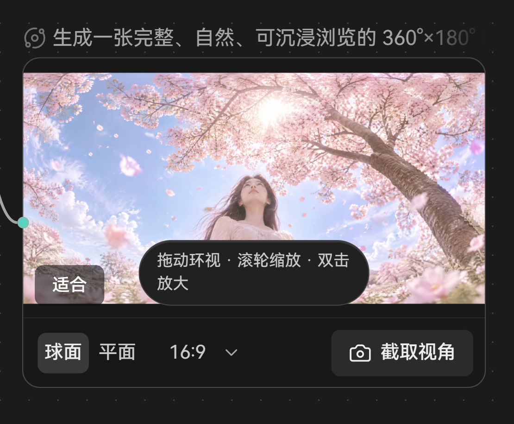
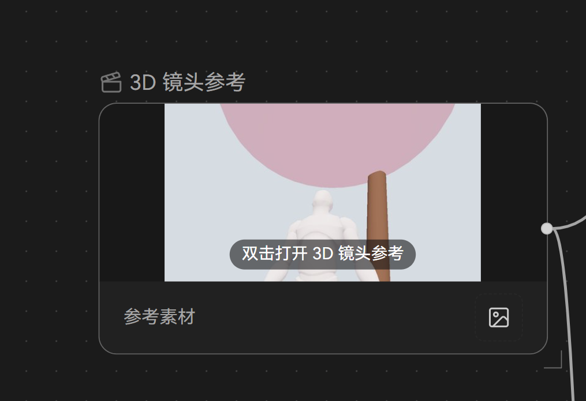

<!doctype html>
<html lang="zh-CN">
<head>
<meta charset="utf-8">
<title>全景与镜头参考节点草稿</title>
<style>
@font-face { font-family: 'HarmonyOS Sans SC UI'; src: url('../../../../src/assets/fonts/HarmonyOS_Sans_SC.ttf') format('truetype'); font-weight: 100 900; font-display: block; }
:root {
  /* 数值取自 src/index.css 的石墨主题令牌；媒体叠层不随主题 */
  --gap:#181818; --window:#1B1B1B; --panel:#212121; --overlay:#292929; --line-overlay:#393939; --overlay-hover:#323232;
  --text1:#EEEEEE; --text2:#CACACA; --text3:#A5A5A5; --icon-rest:#737373; --accent:#3A6FDF;
  --media-scrim: rgba(0,0,0,.55); --media-control: rgba(0,0,0,.45); --media-selected: rgba(255,255,255,.18); --on-media:#FFFFFF; --on-media-2: rgba(255,255,255,.72);
  --idle-border: rgba(165,165,165,.3);
}
* { box-sizing: border-box; margin: 0; }
body { background: var(--gap); color: var(--text1); font: 13px/1.4 'HarmonyOS Sans SC UI', sans-serif; padding: 24px; }
.block { width: 1180px; margin-bottom: 36px; }
.label { color: var(--text1); font-size: 14px; font-weight: 580; margin: 0 0 4px; }
.note { color: var(--text3); font-size: 12px; margin: 0 0 12px; line-height: 1.7; }
.canvas { position: relative; display: flex; gap: 28px; align-items: flex-start; padding: 36px 32px 40px; border-radius: 8px; background-color: var(--window); background-image: radial-gradient(#2c2c2c 1px, transparent 1px); background-size: 16px 16px; }
.cell { position: relative; display: flex; flex-direction: column; gap: 6px; }
.cap { color: var(--text2); font-size: 12px; margin-bottom: 4px; }
.before { width: 360px; border-radius: 6px; display: block; }
.title { display: flex; align-items: center; gap: 6px; color: var(--text3); font-size: 12px; white-space: nowrap; overflow: hidden; max-width: 340px; }
.title svg { width: 14px; height: 14px; }
svg { width: 16px; height: 16px; fill: none; stroke: currentColor; stroke-width: 2; stroke-linecap: round; stroke-linejoin: round; flex: none; }
.node { position: relative; width: 340px; height: 170px; border-radius: 12px; overflow: hidden; background: url('素材/樱花-人像.jpg') center / cover; }
.node.stage { height: 191px; background: url('素材/镜头参考-截图.jpg') center / cover; }
.node::after { content: ''; position: absolute; inset: 0; border-radius: 12px; border: 1px solid var(--idle-border); pointer-events: none; }
.node.sel::after { border: 1.5px solid var(--accent); }
/* 压在画面上的控件：固定媒体叠层（深底白字），不随主题 */
.ov { position: absolute; display: flex; align-items: center; gap: 2px; padding: 2px; border-radius: 8px; background: var(--media-control); color: var(--on-media); }
.ov .seg { height: 24px; padding: 0 8px; border-radius: 6px; display: inline-flex; align-items: center; font-size: 12px; color: var(--on-media-2); }
.ov .seg.on { background: var(--media-selected); color: var(--on-media); }
.ov .dd { height: 24px; padding: 0 4px 0 8px; display: inline-flex; align-items: center; gap: 2px; font-size: 12px; font-variant-numeric: tabular-nums; color: var(--on-media); }
.ov .dd svg { width: 12px; height: 12px; opacity: .7; }
.ov .ib { width: 28px; height: 24px; display: inline-flex; align-items: center; justify-content: center; border-radius: 6px; }
.ov .ib.hover { background: var(--media-selected); }
.ov .vsep { width: 1px; height: 14px; background: rgba(255,255,255,.22); margin: 0 2px; }
.bl { left: 8px; bottom: 8px; }
.br { right: 8px; bottom: 8px; }
.tl { left: 8px; top: 8px; }
.zoom { height: 24px; padding: 0 8px; font-size: 12px; font-variant-numeric: tabular-nums; }
.tip { position: absolute; background: var(--overlay); border: 1px solid var(--line-overlay); border-radius: 8px; padding: 4px 8px; font-size: 12px; color: var(--text1); white-space: nowrap; }
.tip small { color: var(--text3); font-size: 12px; margin-left: 6px; }
/* 节点工具条 */
.bar { display: flex; align-items: center; gap: 4px; padding: 4px; background: var(--overlay); border: 1px solid var(--line-overlay); border-radius: 12px; white-space: nowrap; align-self: center; margin-bottom: 10px; }
.bar .btn { height: 32px; padding: 0 8px; border-radius: 6px; display: inline-flex; align-items: center; gap: 6px; color: var(--text2); }
.bar .seg2 { display: inline-flex; padding: 2px; border-radius: 8px; background: #2B2B2B; }
.bar .seg2 span { height: 28px; padding: 0 10px; border-radius: 6px; display: inline-flex; align-items: center; color: var(--text2); }
.bar .seg2 span.on { background: #3a3a3a; color: var(--text1); }
.bar .ib { width: 32px; height: 32px; border-radius: 6px; display: inline-flex; align-items: center; justify-content: center; color: var(--text2); }
.bar .sep { width: 1px; height: 20px; background: var(--line-overlay); margin: 0 2px; }
.bar .chev { width: 14px; height: 14px; color: var(--text3); }
/* 镜头参考：环境图小样 */
.env { position: absolute; left: 8px; bottom: 8px; display: flex; align-items: center; gap: 6px; height: 28px; padding: 2px 8px 2px 2px; border-radius: 8px; background: var(--media-control); color: var(--on-media); font-size: 12px; }
.env i { width: 40px; height: 24px; border-radius: 5px; background: url('素材/樱花-人像.jpg') center / cover; display: block; }
.env.empty { padding: 0 8px; color: var(--on-media-2); }
.env.empty svg { width: 14px; height: 14px; }
.open { position: absolute; left: 50%; top: 50%; transform: translate(-50%,-50%); height: 32px; padding: 0 12px; border-radius: 16px; background: var(--media-control); color: var(--on-media); display: inline-flex; align-items: center; gap: 6px; font-size: 12px; }
.open svg { width: 14px; height: 14px; }
.cursor { position: absolute; width: 18px; height: 18px; color: #fff; filter: drop-shadow(0 1px 1px rgba(0,0,0,.6)); }
.cursor svg { width: 18px; height: 18px; }
.wide { width: 480px; }
</style>
</head>
<body>
<script>
const ICONS = /*ICONS_START*/{"orbit":"<path d=\"M20.341 6.484A10 10 0 0 1 10.266 21.85\"/><path d=\"M3.659 17.516A10 10 0 0 1 13.74 2.152\"/><circle cx=\"12\" cy=\"12\" r=\"3\"/><circle cx=\"19\" cy=\"5\" r=\"2\"/><circle cx=\"5\" cy=\"19\" r=\"2\"/>","clapperboard":"<path d=\"M20.2 6 3 11l-.9-2.4c-.3-1.1.3-2.2 1.3-2.5l13.5-4c1.1-.3 2.2.3 2.5 1.3Z\"/><path d=\"m6.2 5.3 3.1 3.9\"/><path d=\"m12.4 3.4 3.1 4\"/><path d=\"M3 11h18v8a2 2 0 0 1-2 2H5a2 2 0 0 1-2-2Z\"/>","chevron-down":"<path d=\"m6 9 6 6 6-6\"/>","camera":"<path d=\"M13.997 4a2 2 0 0 1 1.76 1.05l.486.9A2 2 0 0 0 18.003 7H20a2 2 0 0 1 2 2v9a2 2 0 0 1-2 2H4a2 2 0 0 1-2-2V9a2 2 0 0 1 2-2h1.997a2 2 0 0 0 1.759-1.048l.489-.904A2 2 0 0 1 10.004 4z\"/><circle cx=\"12\" cy=\"13\" r=\"3\"/>","download":"<path d=\"M12 15V3\"/><path d=\"M21 15v4a2 2 0 0 1-2 2H5a2 2 0 0 1-2-2v-4\"/><path d=\"m7 10 5 5 5-5\"/>","folder-plus":"<path d=\"M12 10v6\"/><path d=\"M9 13h6\"/><path d=\"M20 20a2 2 0 0 0 2-2V8a2 2 0 0 0-2-2h-7.9a2 2 0 0 1-1.69-.9L9.6 3.9A2 2 0 0 0 7.93 3H4a2 2 0 0 0-2 2v13a2 2 0 0 0 2 2Z\"/>","ellipsis":"<circle cx=\"12\" cy=\"12\" r=\"1\"/><circle cx=\"19\" cy=\"12\" r=\"1\"/><circle cx=\"5\" cy=\"12\" r=\"1\"/>","box":"<path d=\"M21 8a2 2 0 0 0-1-1.73l-7-4a2 2 0 0 0-2 0l-7 4A2 2 0 0 0 3 8v8a2 2 0 0 0 1 1.73l7 4a2 2 0 0 0 2 0l7-4A2 2 0 0 0 21 16Z\"/><path d=\"m3.3 7 8.7 5 8.7-5\"/><path d=\"M12 22V12\"/>","plus":"<path d=\"M5 12h14\"/><path d=\"M12 5v14\"/>"}/*ICONS_END*/;
const i = (n) => `<svg viewBox="0 0 24 24">${ICONS[n] || ''}</svg>`;
const panoTitle = `<div class="title">${i('orbit')}生成一张完整、自然、可沉浸浏览的 360°×180° 全景…</div>`;
const stageTitle = `<div class="title">${i('clapperboard')}3D 镜头参考</div>`;
const seg = (on) => `<span class="seg ${on === 'sphere' ? 'on' : ''}">球面</span><span class="seg ${on === 'flat' ? 'on' : ''}">平面</span>`;
const ratio = `<span class="dd">16:9${i('chevron-down')}</span>`;
const blocks = [
  { id: 1, label: '全景 · 现状：提示语折成两行压在画面中央，底下一整条控件栏把节点切成两截',
    note: '“拖动环视 · 滚轮缩放 · 双击放大”是操作说明，常驻在画面正中，节点一窄就折行；左下的“适合”和提示挤在一起。底栏 48 高、上面一条线，“截取视角”还带底色，像这个节点的主动作，但它只是偶尔用的工具。',
    html: `<div class="canvas"><div class="cell"><div class="cap">现状</div></div></div>` },
  { id: 2, label: '全景 · 方案 A（推荐）：画面铺满节点，控件半透明叠在画面底边，平时不出现，悬停或选中才出现',
    note: '节点只剩画面本身，和图片、视频节点一样整块铺满。鼠标移上去或选中时，左下出现“球面 | 平面 · 16:9”，右下出现一个相机图标（截取视角，悬停提示写全称）；缩放读数只在放大后出现在左上，点它回到适合。操作说明整条删掉：手形光标已经告诉人“能拖”，全称和快捷操作写进相机和读数的悬停提示。叠层是固定的深色半透明底加白字，压在任何画面上都看得清。',
    html: `<div class="canvas">
      <div class="cell"><div class="cap">静息：只有画面</div>${panoTitle}<div class="node"></div></div>
      <div class="cell"><div class="cap">悬停 / 选中：控件浮在底边</div>${panoTitle}<div class="node sel">
        <div class="ov bl">${seg('sphere')}<span class="vsep"></span>${ratio}</div>
        <div class="ov br"><span class="ib hover">${i('camera')}</span></div>
      </div>
      <div class="tip" style="left:236px; top:230px">截取视角<small>把当前画面另存成一张图</small></div></div>
      <div class="cell"><div class="cap">放大后：左上出现读数</div>${panoTitle}<div class="node sel" style="background-size:180%">
        <div class="ov tl"><span class="zoom">240%</span></div>
        <div class="ov bl">${seg('flat')}<span class="vsep"></span>${ratio}</div>
        <div class="ov br"><span class="ib">${i('camera')}</span></div>
      </div></div>
    </div>` },
  { id: 3, label: '全景 · 方案 B：画面铺满，控件挪进选中节点时上方的工具条',
    note: '画面上一个控件都不放，最干净；球面/平面、比例、截取视角和下载、加入剪辑等节点动作排在同一条工具条里。缺点是不选中就切不了模式，查看时要先点一下；工具条也会因此变长。',
    html: `<div class="canvas"><div class="cell" style="align-items:center">
      <div class="bar"><span class="seg2"><span class="on">球面</span><span>平面</span></span><span class="btn">16:9${i('chevron-down').replace('<svg','<svg class="chev"')}</span><span class="ib">${i('camera')}</span><span class="sep"></span><span class="ib">${i('download')}</span><span class="ib">${i('folder-plus')}</span><span class="ib">${i('clapperboard')}</span><span class="ib">${i('ellipsis')}</span></div>
      ${panoTitle}<div class="node sel"></div></div></div>` },
  { id: 4, label: '镜头参考 · 现状：节点比例跟画面比例对不上，左右两条黑边；底下单独一行“参考素材”',
    note: '节点宽按 16:9 定，但高度里扣掉了底下那一行，画面区就比 16:9 扁，左右只好留黑边；不手动拉节点就一直浪费。底行只有一个“参考素材”和一个上传按钮，占了节点三分之一的高。“双击打开 3D 镜头参考”同样是常驻说明。',
    html: `<div class="canvas"><div class="cell"><div class="cap">现状</div></div></div>` },
  { id: 5, label: '镜头参考 · 方案（推荐）：节点就是画面，按画面比例定大小；环境图缩成左下角一个小样',
    note: '去掉底行后，节点大小直接按渲染画面的比例算，黑边自然消失。环境图（参考素材）缩成左下角一个小样：有图时显示缩略图 + “环境”，点它换图或移除；没有图时只在悬停或选中时出现“＋ 环境图”。“双击打开”的说明删掉，悬停时画面中央出现一个“打开”按钮（点它和双击一样），工具条里也有同一个入口。',
    html: `<div class="canvas">
      <div class="cell"><div class="cap">静息（有环境图）</div>${stageTitle}<div class="node stage"><div class="env"><i></i>环境</div></div></div>
      <div class="cell"><div class="cap">悬停 / 选中</div>${stageTitle}<div class="node stage sel"><div class="env"><i></i>环境</div><span class="open">${i('box')}打开</span></div></div>
      <div class="cell"><div class="cap">悬停（还没有环境图）</div>${stageTitle}<div class="node stage"><div class="env empty">${i('plus')}环境图</div><span class="open">${i('box')}打开</span></div></div>
    </div>` },
];
document.body.innerHTML = blocks.map((b) => `<div class="block" data-id="${b.id}"><p class="label">${b.label}</p><p class="note">${b.note}</p>${b.html}</div>`).join('');
</script>
</body>
</html>
